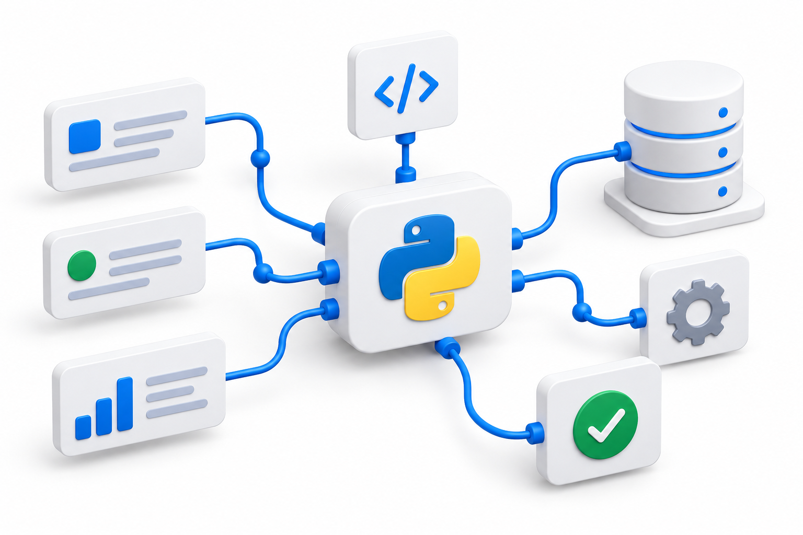

Bots e chatbots
Telegram, WhatsApp, triagem, atendimento, membros, pagamentos, notificações, grupos e canais.
Desenvolvimento em Python para bots, APIs, inteligência artificial e integrações — do alinhamento aos testes operacionais.

Sou o fabiomdsiq, desenvolvedor Python especializado na criação de bots, chatbots, dashboards, APIs, integrações e automações. Transformo processos manuais em fluxos simples, testáveis e funcionais.
Antes de desenvolver, procuro entender a operação, separar o que é essencial do que pode ficar para uma próxima etapa e definir como o resultado será validado. Durante o projeto, mantenho comunicação próxima, realizo testes funcionais e operacionais e ajusto os fluxos necessários.
Projetos com escopo claro, validação prática e foco no que gera resultado.
Telegram, WhatsApp, triagem, atendimento, membros, pagamentos, notificações, grupos e canais.
Atendimento, respostas, qualificação, agendamentos e transbordo humano.
Integração entre sistemas, autenticação, eventos, dados e tratamento de falhas.
GPT aplicado a atendimento, classificação, extração e organização de conteúdo.
Coleta, limpeza, transformação, sincronização e relatórios automatizados.
Confirmação de cobrança e liberação, bloqueio ou renovação automática.
Crio painéis interativos e dinâmicos para acompanhar operações, projetos, automações e resultados em tempo real.
Projetos realizados
47Soluções entregues e avaliadasAvaliações
48Referências verificáveisNota média
4,57/5Qualidade comprovada na plataformaInsight ativo
Centralize indicadores, acompanhe gargalos e transforme dados dispersos em decisões rápidas.Este próprio widget demonstra
Demonstração interativa construída com dados reais do perfil e uma representação qualitativa das áreas de foco.
Explore exemplos de automações que posso adaptar ao seu cenário.
Recebe novos usuários, faz perguntas, valida respostas, aprova ou encaminha para análise humana e registra decisões.
Cadastra membros, verifica pagamentos, libera links, avisa sobre vencimentos e controla inadimplência.
Copia, filtra ou encaminha mensagens entre grupos e canais, com filas, horários e controle de falhas.
Cria menus, responde dúvidas, consulta sistemas, identifica intenções e transfere casos especiais para uma pessoa.
Apresenta serviços e horários, coleta dados, confirma, lembra ou cancela conforme as regras da operação.
Recebe solicitações, aplica instruções de IA, valida a saída e permite aprovação humana antes do uso.
Busca, valida e transforma dados de uma API para atualizar planilhas automaticamente, sem duplicidades.
Valida pagamentos recebidos por webhook e libera acesso a grupo, canal, conteúdo ou serviço.
Consulta e sincroniza anúncios, produtos, pedidos, preços ou estoques usando os recursos permitidos pela API.
Coleta dados públicos de páginas acessíveis, detecta mudanças e entrega resultados organizados.
Limpa, padroniza, cruza e consolida dados para eliminar tarefas repetitivas e gerar relatórios.
Oferece uma interface local para selecionar arquivos, executar automações, acompanhar resultados e salvar configurações.
Nenhum projeto encontrado neste filtro.
Do entendimento da necessidade à entrega, você acompanha o progresso e valida o resultado em cenários reais.
Entendo o objetivo, o contexto, as entradas, as saídas e as regras.
Separo o MVP das melhorias futuras e defino critérios de aceite.
Construo o fluxo principal primeiro para permitir feedback rápido.
Conecto APIs, bancos ou planilhas com tratamento de falhas.
Valido cenários normais, exceções, permissões e indisponibilidades.
Organizo a solução, explico a operação e alinho o suporte.
Ferramentas consolidadas, escolhidas de acordo com o fluxo e o ambiente do projeto.
“Comunicação próxima, desenvolvimento por etapas e testes no uso real.”
Estou disponível para conversar, alinhar o MVP e definir os testes necessários.
Gostaria muito de ajudar a criar a melhor solução para o seu projeto.